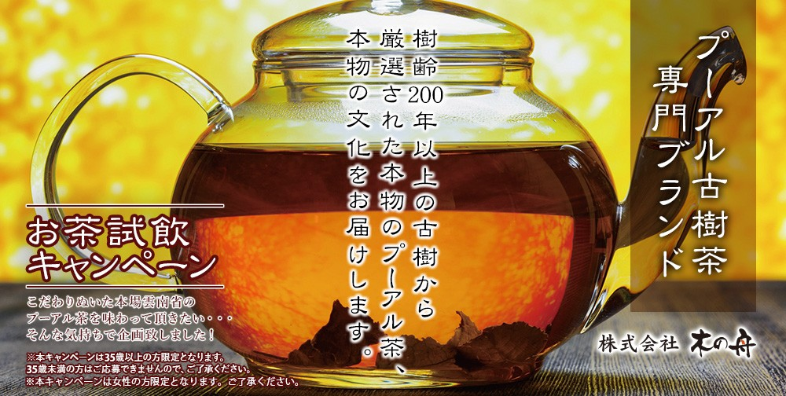
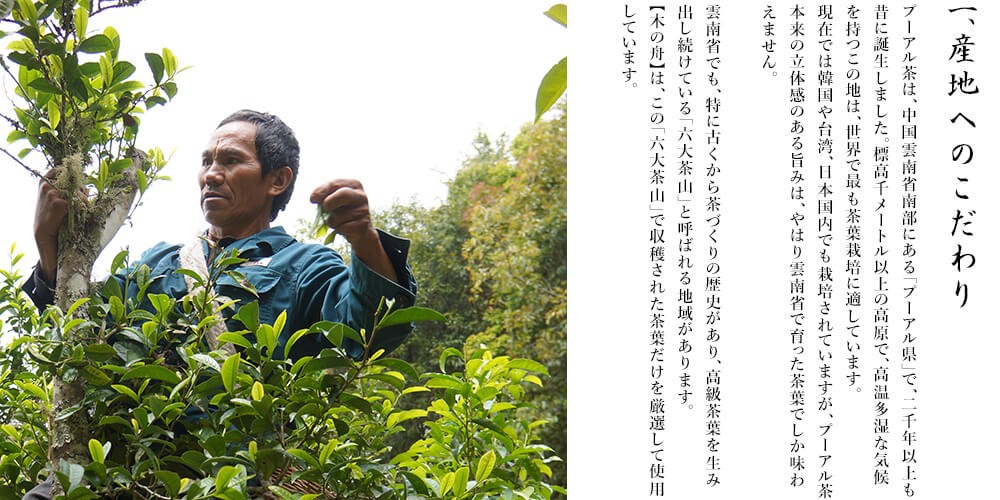
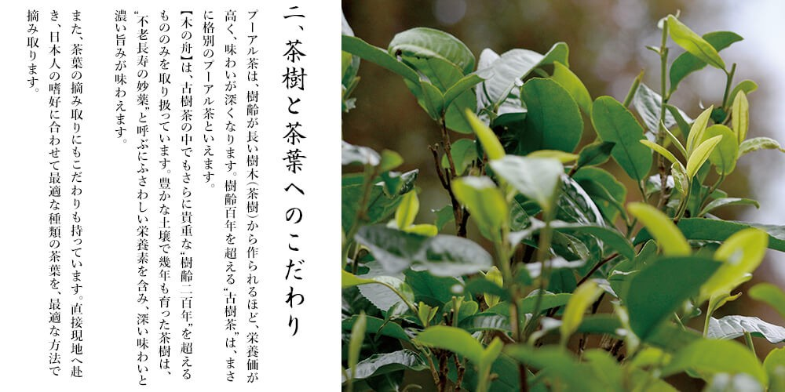
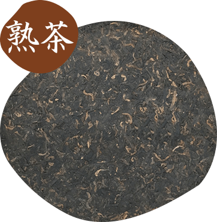
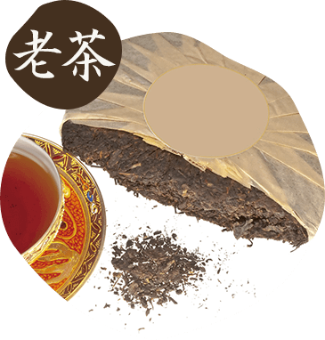

平素より格別の引き立てを賜り、厚く御礼申し上げます。
弊社は、新型コロナウイルス感染拡大防止に向けた取り組みを進めております。
現時点では、弊社の従業員には、感染者は確認されておりませんが、
引き続きお客様に安心してご利用いただけるよう、以下の対応を行っておりますのでお知らせいたします。
記
1.マスクの配布と着用の義務化。アルコール除菌剤の設置・増設を行い、
事務所内の除菌清掃の強化しております。
2.従業員に手洗いうがい、アルコール消毒液での手指消毒を徹底させ、
出勤前の検温で37.5度以上の発熱、および異常がみられる場合には、出勤を禁じております。
3.試飲の際には、全スタッフがマスクを着用しております。
弊社では、お客様と社員の安全を最優先に考え、今後も感染拡抑止大に努めてまいりますので、
ご理解賜りますよう宜しくお願い申し上げます。
プアール茶の本場、中国雲南省で摂れる樹齢200年以上の茶葉は
"飲める骨董品"
と呼ばれるほど価値が高く、また深い味わいがあります。
私たちは度々中国へ赴き、より良い茶葉を探しています。
この度、新しく仕入れた貴重なプーアル茶と、その文化をお届けしたく思います。
また、"お茶のある生活"を愉しんでいただくため、プレゼントをご用意いたしました。
私たちは、日本国内はもちろん、台湾、韓国へも赴き、より良いプーアル茶を探してきました。
そしてやはり、プーアル茶発祥の地である、雲南省南部に辿り着きました。
産地だけでなく、茶葉、熟成、そして安心にこだわりをもち、
高級茶葉の中でも、より厳選した茶葉のみを提供します。




プーアル茶には、加工方法により「熟茶」と「生茶」に分けられます。
【木の舟】では、一般的に出回っている熟茶ではなく、
希少価値の高い生茶と、生茶を10年以上熟成させた「老茶」のみを取り扱っています。

人工的に発酵を行い、短期間で完全発酵させたプーアル茶を「熟茶」といいます。
大量生産用に栽培された茶葉を用いて急速に発酵させるため、風味が失われてしまいますが、
その代わり安価で手に入ります。ペットボトル飲料やティーバックなどに加工されることが多く、
日本で流通されているプーアル茶のほとんどは熟茶です。
プーアル茶本来の特徴を活かし、長い歳月をかけ自然発酵により熟成させたプーアル茶を「生茶」といいます。
品質が劣る茶葉は長期間熟成することが難しいため、品質の良い茶葉を厳選して使用します。
立体的でまろやかな旨みがあり、陳香と呼ばれる独特の香りも愉しめます。
”飲める骨董品”と呼ばれるように、熟成年数によっては資産価値も生まれます。
【木の舟】では、自信をもってお勧めできる 「生茶」を仕入れています。


10年以上の長期間、丁寧に熟成させた生茶を「老茶」といいます。
プーアル茶は、ワインのように長い年月をかけて、熟成の変化を愉しむことができます。
10年以上も熟成されたものは大変貴重で、市場に流通することも少なく、非常に高価で取引されています。
もちろん、味わいも格別に深く、感動的とさえいえる体験を与えてくれます。
まがい物も多く出回っていますが、
【木の舟】は品質が保証できる「老茶」を現地から仕入れています。
豊かな土壌で200年以上育ち、丁寧に熟成された茶葉は、豊富な栄養素を含みます。
その豊富な栄養素から、美容・健康目的でプーアル茶を飲まれる方もいらっしゃいます。

健康維持のために
真剣にダイエットがしたい

不足した栄養を補う為に

豊富なカテキンをとりたい